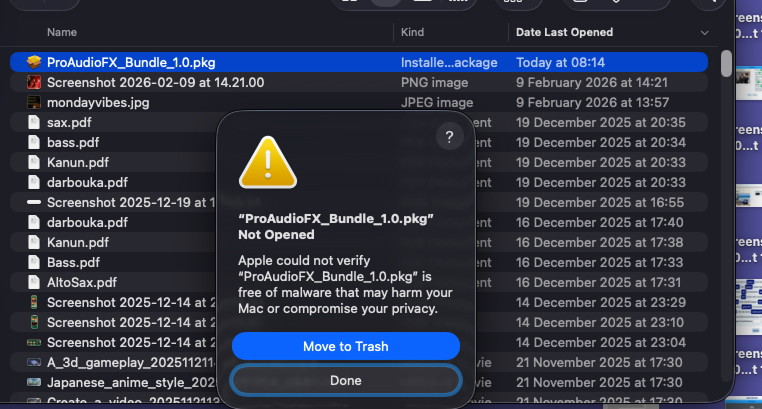
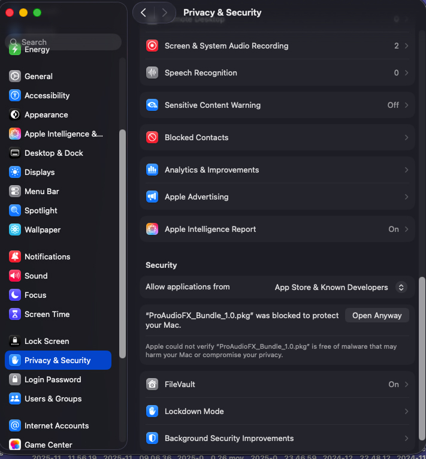
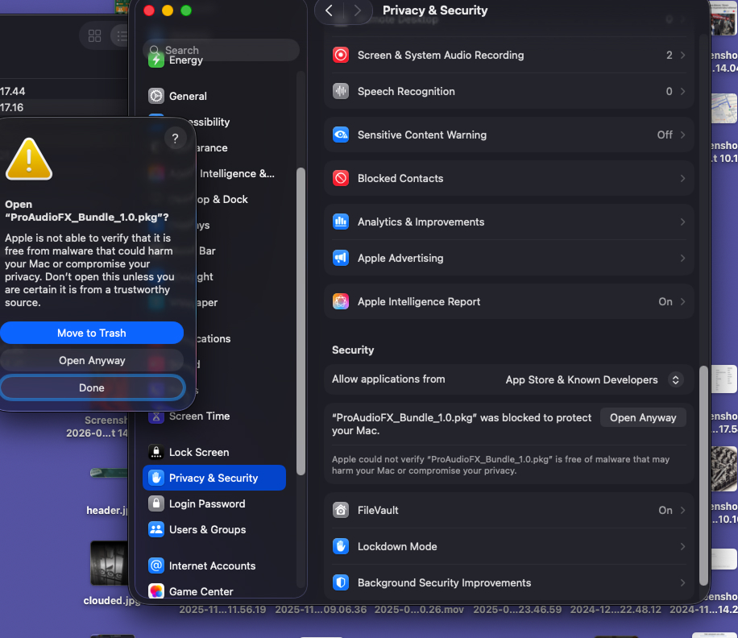
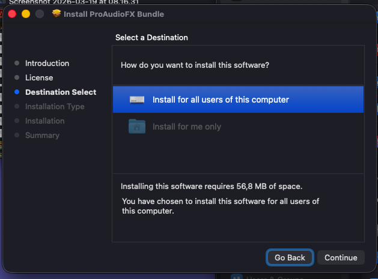
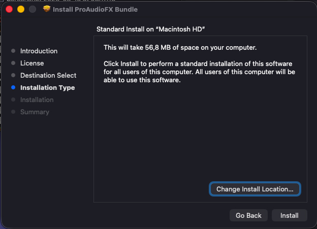
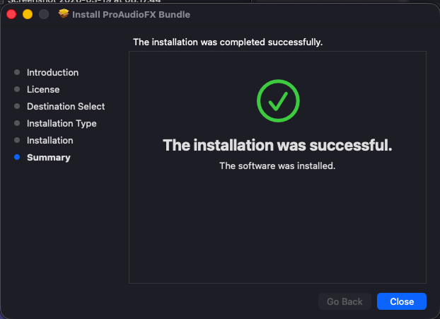

Download ProAudioFX Bundle
Follow the steps below to install your free plugins.
How to Install
Open the downloaded .pkg file and follow the on-screen instructions. The installer sets up all three plugins automatically.






In the next step, you will see a few ads.
Please do not skip them.
ProAudioFX plugins are 100% free — ad revenue is the only way
we can continue building new tools for you.
次のステップでいくつかの広告が表示されます。
スキップしないでください。
ProAudioFXのプラグインは完全無料です。広告収入だけが
新しいツールを開発し続けるための手段です。
These Plugins Are Free.
Your Support Makes It Possible.
We never charge for our plugins — and we never will.
Developing professional audio tools takes time and resources. To keep everything free, we display a small number of ads. Please take a moment to view the content below — it directly supports the development of future plugins.
Please watch the ads below. Thank you.
ProAudioFX Bundle
Includes Vintage Tape, Vintage EQ, and Falling from Heaven. One installer — all three plugins. Compatible with Logic Pro, Ableton Live, Reaper, and Cubase.
⬇ Download — Free